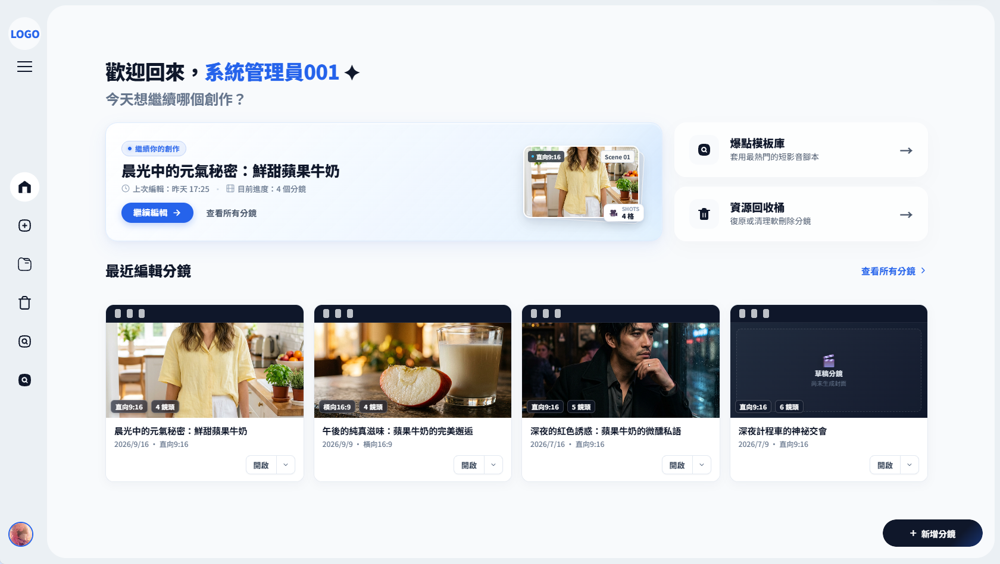

每個鏡頭，都能再推敲。
編輯故事內容、景別與運鏡描述，調整秒數。讓每一鏡都有明確的敘事目的。
讓散落的靈感有地方開始。
建立創作、整理專案，再回到每個鏡頭。

輸入短影音主題、故事或場景，留下你最想拍的那個念頭。
「我想拍一支關於相遇的短片。」故事輸入示例
討論敘事方向、觀眾與調性，確認創作摘要，再決定風格、秒數與畫面比例。
生成分鏡後，接著調整畫面、鏡頭語言與時間，讓草稿更接近你的想像。
一張分鏡，不只是一張圖。
把畫面、動作和節奏放在一起思考。
編輯故事內容、景別與運鏡描述，調整秒數。讓每一鏡都有明確的敘事目的。
在分鏡表與膠卷視圖之間切換，從逐鏡細節到連續畫面，換個角度檢視故事。
透過專案工作區整理分鏡，回到上次的創作，接著把故事完成。